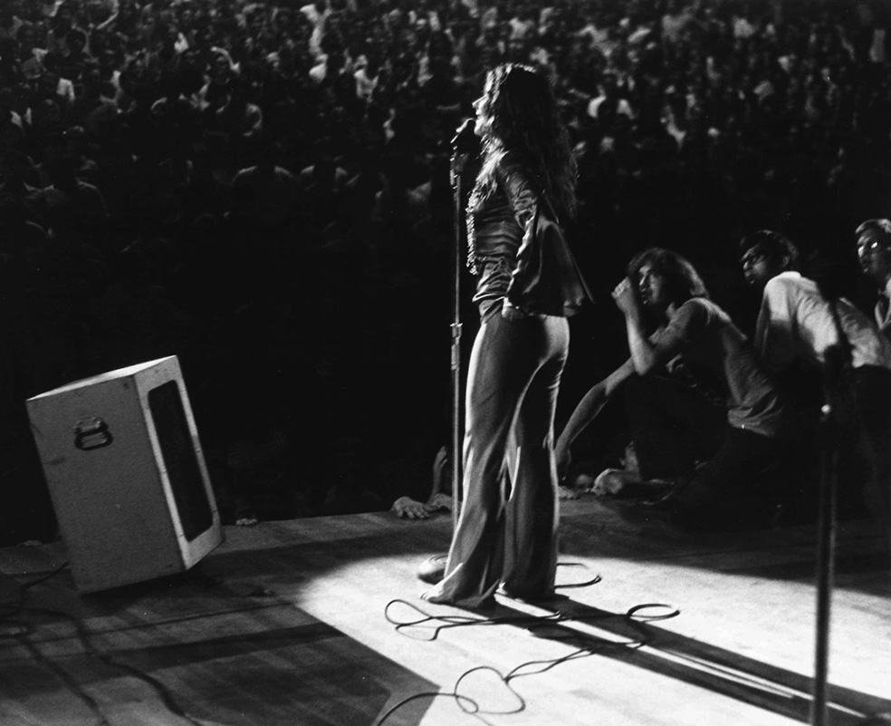
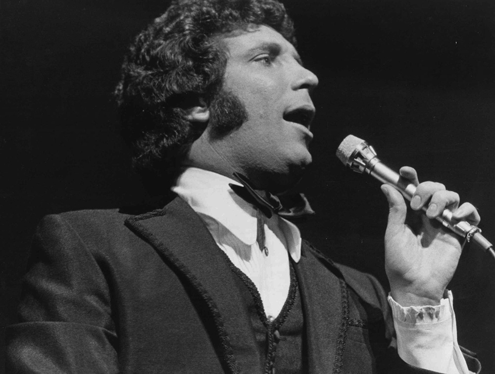
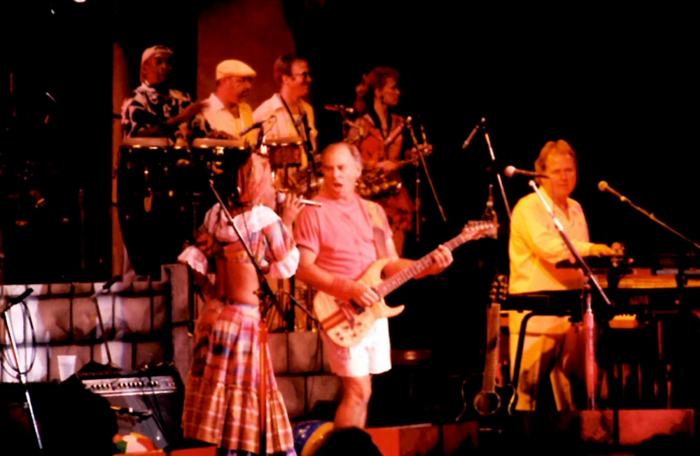
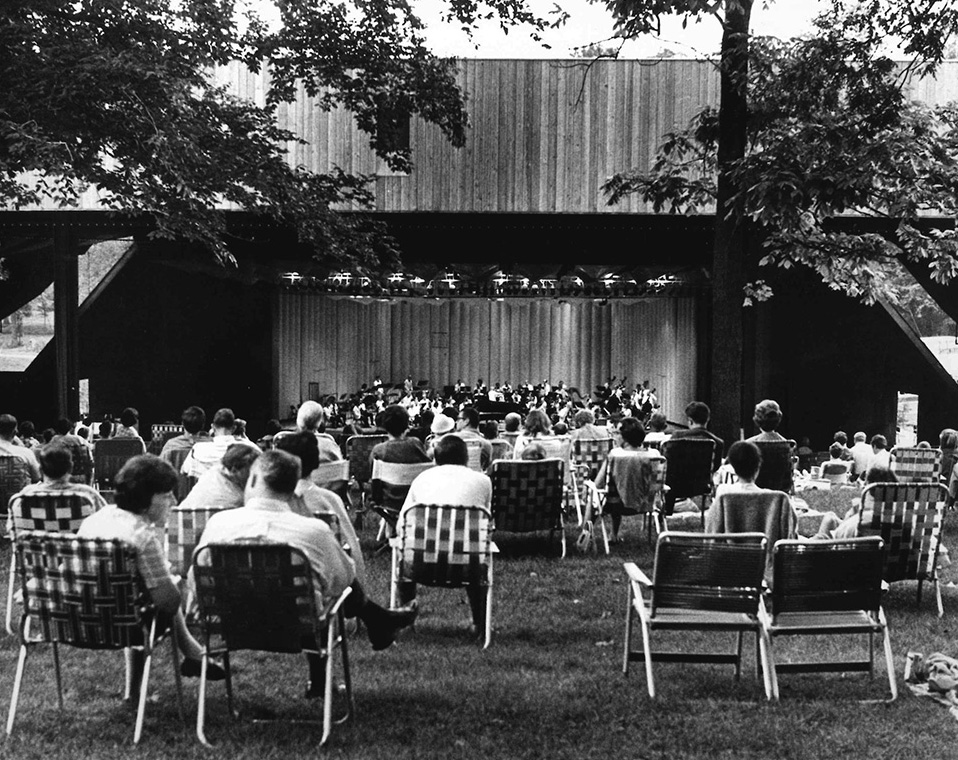
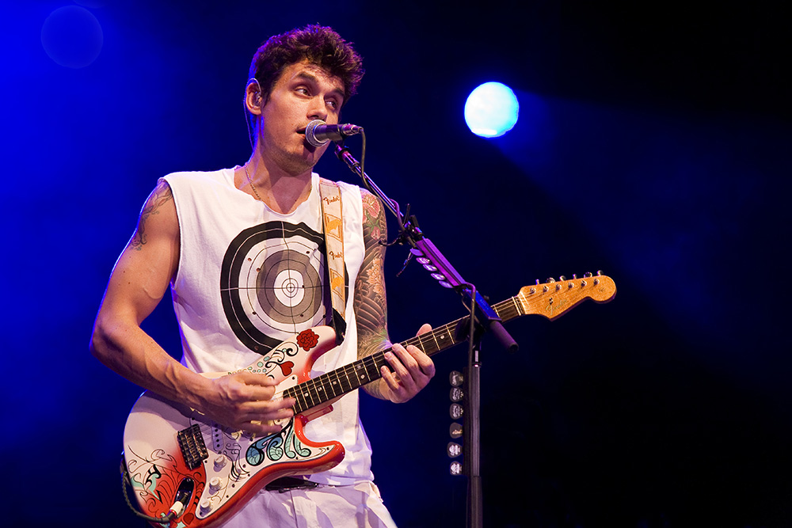
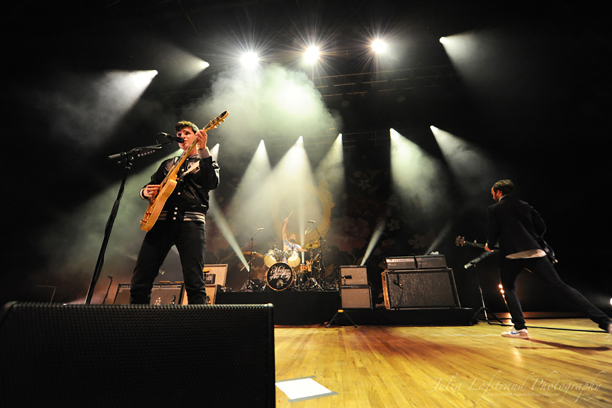
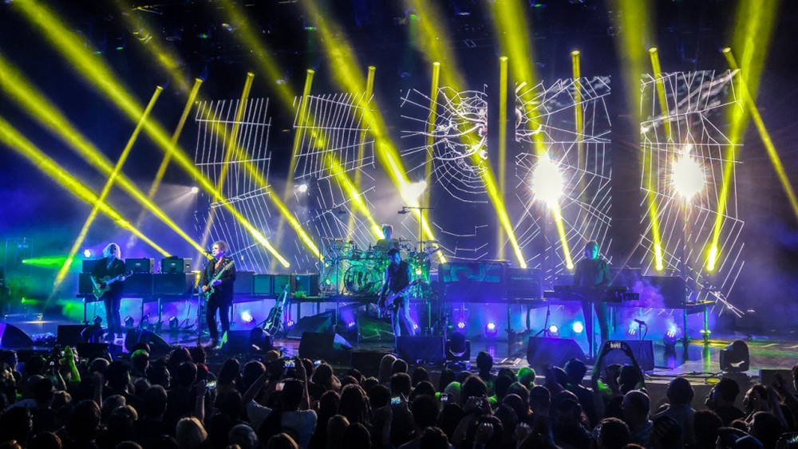

Country star Taylor Swift performs at Merriweather Post Pavilion on June 11, 2009. (Leslie Furlong)
Compton, Calif., rapper Kendrick Lamar performs at Merriweather Post Pavilion on May 30, 2015 as a part of the Sweetlife Festival. (Richie Downs)
Dan Auerbach of the Black Keys performs at Merriweather Post Pavilion on May 18, 2012. (Leslie Furlong)
British folk-rock act Mumford & Sons performs at Merriweather Post Pavilion on June 9, 2011. (Courtesy of Merriweather Post Pavilion)
50 years of
Merriweather
A look at a concert venue’s legacy, future
By Wesley Case, The Baltimore Sun
July 14, 2017
Growing up as a music-obsessed kid in Rockville, Marc Roberge always considered Merriweather Post Pavilion a special place where magic happened through amplifiers and earnest performances. Through his nearly two decades as frontman in the band O.A.R., he learned that feeling wasn’t limited to locals.
“We’ve shared so many conversations with so many artists about venues you have to play. We stand around and say, ‘When are you playing Red Rocks? Are you playing the Gorge this year?’” Roberge said recently. “Merriweather is on the list.”
Over the past five decades, the Columbia venue has built its reputation through concerts that represented the zeitgeist of their times: Led Zeppelin, Stevie Wonder, Aretha Franklin, David Bowie, Whitney Houston, the Grateful Dead, Metallica, Wu-Tang Clan, Pearl Jam, Radiohead, Kanye West and countless others cemented within pop music’s canon.
That a venue of such renown is located on 40 acres of an otherwise quiet, wooded area in a planned suburban community makes it all the more remarkable. And as Merriweather prepares to celebrate its 50th anniversary with a concert featuring Willie Nelson and Jackson Browne on Saturday, it’s in the process of a wide-ranging, $55 million renovation that its management team hopes will secure its future for decades to come.
“We want to build the best fan experience, the best artist experience and the best place to work,” said Brad Canfield, vice president of operations. “I’m hoping that we’re laying the foundation for the next 50 years.”
Pictured: Fans watch the Who perform from Merriweather Post Pavilion’s lawn on June 29, 1970. (Gordon Snyder)
From symphony to rock ’n’ roll
Merriweather’s beginnings, however, were less auspicious.
James Rouse, Columbia’s creator, pictured the property as a fine-arts hub, so the Washington National Symphony played the opening night, July 14, 1967. Groups like the New York City Ballet and Israel Philharmonic Orchestra rounded out the first season.
A promotional poster for some of Merriweather Post Pavilion's 1981 concert schedule. That year, the venue hosted 62 shows. (Courtesy of Merriweather Post Pavilion)
While critics raved about the new venue and its acoustics, the undersold crowds reflected a disconnect in demand. Meanwhile, a golden era of rock ’n’ roll was blooming, so Merriweather began booking the emerging acts of the time: Jimi Hendrix, the Doors, Janis Joplin and Blood, Sweat and Tears. Orchestral performances still occurred throughout the 1970s, but lineups were dominated by rock and pop music — the forces driving ticket sales.
With its open, sloping field and the amphitheater’s striking design by architect Frank Gehry, Merriweather established itself as a great setting for a concert. Over the years, the venue — which is now owned by the nonprofit Downtown Columbia Arts and Culture Commission — showed it would accommodate requests to keep artists happy, too.
Loge seating sections along the sides were added prior to the 1970 season to book Tom Jones, who required a minimum number of seats, said spokeswoman Audrey Fix Schaefer. Thirty-five years later, Merriweather removed 15 rows of seats so Green Day could have a mosh pit on its “American Idiot” tour.
Use arrows to click through gallery
Gladys Knight and the Pips, opening for Tom Jones, perform at Merriweather Post Pavilion in June 1970. (Gordon Synder)
Willie Nelson (left) sings “Georgia on My Mind” with President Jimmy Carter on stage at Merriweather Post Pavilion on July 21, 1978. (Courtesy of Merriweather Post Pavilion)

Janis Joplin performs at Merriweather Post Pavilion in July 1969. The James Cotton Blues Band also performed. Tickets that season cost $3-$7. (Gordon Snyder)
A ticket stub for Tom Jones’ June 1970 concerts. The venue added the loge sections to secure shows with the singer, who required a minimum number of seats to perform. (Courtesy of Merriweather Post Pavilion)

Singer Tom Jones performs at Merriweather Post Pavilion in June 1970. (Gordon Snyder)
Fans enter Merriweather Post Pavilion for a concert featuring Country Joe & the Fish and Iron Butterfly on Aug. 24, 1968. A full season of lawn tickets cost $5.95 that year. (Gordon Snyder)

Jimmy Buffett performs at Merriweather Post Pavilion in July 1994. With 46 appearances, Buffett has performed at the venue the most out of any artist. (Courtesy of Merriweather Post Pavilion)
The Merriweather Post Pavilion lawn crowd for Santana and Rusted Root on July 14, 1997. (Courtesy of Merriweather Post Pavilion)
The crowd watches the Lilith Fair, the festival featuring only female solo artists and female-led bands, at Merriweather Post Pavilion on July 29, 1997. Sarah McLachlan, Sheryl Crow, Tracy Chapman and others performed. (Courtesy of Merriweather Post Pavilion)
Fans watch Blood, Sweat & Tears perform at Merriweather Post Pavilion on June 27, 1969. (Courtesy of Merriweather Post Pavilion)

Patrons watch the Washington National Symphony Orchestra at Merriweather Post Pavilion on June 21, 1970. (Gordon Snyder)
Despite changes to the physical layout over the years, Merriweather has retained an aesthetic charm, said Hollis Karr, a music fan who grew up in Columbia. She’s attended at least one show per year there since the late 1970s.
“It’s a somewhat intimate outdoor venue unlike like some other ones,” Karr said. “I think that allows the audience and the artist to connect a little bit more.”
That balance of obliging fans and artists has become a hallmark of Merriweather, said operator Seth Hurwitz.
“My job is to please people,” said Hurwitz, who took over at the venue after the 2003 season. “Then the band wants to come back, and the audience wants to come back. That’s my goal.”
Pictured: Fans watch the rock band Brand New at Merriweather Post Pavilion on July 12, 2016. (Jonathan Mount / For The Baltimore Sun)
Fortifying a legacy
The allure of Merriweather isn’t only noticed by locals.
Hurwitz, whose I.M.P. concert promotions and production company also owns and operates the 9:30 Club and other Washington venues, has a track record that has earned Merriweather national accolades.
Billboard magazine named Merriweather the country’s second best amphitheater in 2010. Three years later, it made the list of top five amphitheaters in America as chosen by Rolling Stone, which described Merriweather as “a huge wooden slab that seems to float over a hillside near Baltimore.”
Merriweather, which seats approximately 19,000, has earned national recognition in large part because of its consistent schedule of eclectic acts, whose genres read like a record store’s layout — country, rock, R&B, pop, rap, indie-rock, jazz and bluegrass are all regularly represented.
Oftentimes, Hurwitz aims to book artists who’ve emerged from the fringes but haven’t yet reached ubiquity. He pointed to the xx and the Lumineers as recent examples.
“I’ve always survived by finding acts before they explode or are just right on the cusp,” he said. “There will always be a market for that, because there’s always new bands.”
›
‹
It doesn’t look anything like any other venue in America. Physically, Merriweather has an appearance of some sort of indoor-outdoor space. It just has it all. It’s in the middle of the woods. You just feel like you bore out a tree and moved in.
- MARC ROBERGE, SINGER OF O.A.R.
What complicates Hurwitz’s job is Merriweather’s status as an independent promoter. Merriweather competes with the entertainment conglomerate Live Nation, which owns nearly 200 venues across the world, including the nearby Jiffy Lube Live in Bristow, Va.
Gary Bongiovanni, editor in chief of the concert industry trade publication Pollstar, said it’s common for music acts to sign contracts with large promoters like Live Nation and AEG Live that prohibit playing locations not affiliated with those companies, leaving independent venues like Merriweather off the itinerary.
“Some artists will simply follow the bigger check,” Bongiovanni said. “The fact that Merriweather has been so successful despite the fact that they’re a smaller facility and they’re booked independently is a testament to the venue and the people who operate it.”
Use arrows to click through gallery

John Mayer performs at Merriweather Post Pavilion on July 13, 2008. Brett Dennen also performed. (Leslie Furlong)
Kanye West performs on the first day of HFStival on May 27, 2006 at Merriweather Post Pavilion. The two-day event also featured Counting Crows, the Strokes and All Time Low. (Courtesy of Merriweather Post Pavilion)
Willie Nelson performs at Merriweather Post Pavilion on Aug. 19, 2015. The singer/songwriter will also perform at the venue on July 15 as a part of Merriweather’s 50th anniversary concert. (Courtesy of Merriweather Post Pavilion)

Vampire Weekend performs at Merriweather Post Pavilion as a part of the final Virgin Mobile FreeFest on Sept. 21, 2013. Other performers included MGMT, the Avett Brothers and Sky Ferreira. (Julia Lofstrand)

The Cure performs at Merriweather Post Pavilion on June 22, 2016. (Dave Barnhouser)
Virgin Group founder Richard Branson greets the Merriweather Post Pavilion crowd during Virgin Mobile FreeFest on Aug. 30, 2009. Performers that year included Blink-182, Weezer and Wale. (Courtesy of Merriweather Post Pavilion)
Arctic Monkeys open for the Black Keys at Merriweather Post Pavilion on May 18, 2012. (Leslie Furlong)
The Lumineers perform at Merriweather Post Pavilion on Sept. 10, 2016. (Richie Downs)
Mumford & Sons perform at Merriweather Post Pavilion on June 9, 2011. (Courtesy of Merriweather Post Pavilion
Audiences might not realize the tug-of-war politics behind venues landing artists, but Merriweather’s successful pursuit of talent can lead to thrilling results for music fans.
Dave Portner — who performs under the alias Avey Tare in Animal Collective, a band that names its 2009 breakthrough after Merriweather — fondly recalled seeing Elton John there with his family. Seeing an act that normally plays giant stadiums and arenas in a venue like Merriweather enhanced the experience, the Owings Mills native said.
“It’s cool to be able to see them in a little bit smaller place,” Portner said.
Pictured: Jason Isbell performs at Merriweather Post Pavilion on Friday in Columbia on Friday, June 30, 2017. (Michael Ares / The Baltimore Sun)
Renovating for the future
After spending a recent Friday afternoon watching his daughter splash around in a backstage kiddie pool, Jason Isbell took the Merriweather stage with a huge smile on his face. The Nashville-based singer-songwriter quickly gushed about the surroundings.
“We never thought we’d get to headline a venue like this,” Isbell said. “The place keeps getting better and better every time we come back.”
It’s a sentiment Merriweather officials hope will be common among returning artists.
A recent tour of the venue revealed the major renovations that Canfield said were long overdue. For fans, they include new bathrooms, more food options and a larger stage house capable of accommodating elaborate productions that previously wouldn’t have fit at Merriweather. (Canfield cited the Chainsmokers, who performed there in late May, as a recent example.)
There’s also the new $6.6 million Chrysalis amphitheater, located about 200 yards from the main pavilion. In the midst of trees, the bright green sculpture adds a more intimate stage that will host the band Greensky Bluegrass on July 22 as one of its first performances.
Top left: Ticket stubs from a performance by the Washington National Symphony featuring Van Cliburn on July 6, 1968. Tickets that season cost between $3.50-$5.50. Top right: A poster from the Virgin Mobile FreeFest 2009. Bottom: A promotional schedule from the 1969 Merriweather Post Pavilion season. Though not listed, The Who and Led Zeppelin performed on the same bill on May 25 that year. (Courtesy of Merriweather Post Pavilion)
What could have the most significant impact for Merriweather’s future is the space most fans will never get to see: backstage. What used to be a quaint area of double-wide trailers for artists and their teams has been transformed into a sprawling, 15,000-square-foot complex with 11 dressing room suites that can comfortably accommodate artists and families. It can also host festivals with larger lineups, which Merriweather plans to book more of in the future, Hurwitz said.
Not all music fans love the growing emphasis on festivals.
“That’s more for a younger generation,” said Karr, who believes the all-day events can often contribute to increased drunkenness and drug use among patrons. “I’d rather see them pay more money for a really stellar act or two than the multiple acts, but I understand that it’s a business.”
In 2014, two males, ages 17 and 20, died of apparent drug overdoses while attending an electronic dance music festival at Merriweather. Police, who said MDMA was the most commonly used drug at the show, also issued 50 underage drinking citations that day. In a statement released shortly after, Hurwitz mourned the deaths, stating, “We need to work on convincing kids that those pills they put in their mouth could kill them.”
Another event, the genre-spanning Sweetlife Festival in 2015, sparked noise complaints from nearby residents; Merriweather installed new sound monitoring systems the following year in response.
Summer festivals of all genres, though, have become hugely popular, and Merriweather’s renovations reflect a venue ready to host more. There’s now a large dining room, cabanas for private massages from on-site masseurs and a heated swimming pool that artists have already used during post-performance parties.
“We were 10 or 15 years behind when we should have [renovated],” Canfield said. “A couple people summed it up that we went from a crusty old summer camp that had been neglected to a Four Seasons.”
To compete with corporations with bigger budgets and resources, Merriweather hopes its updated amenities create a welcoming environment that will make a lasting impression on artists. The aim is to give them reasons to come back, Hurwitz said.
Earlier this year, Hurwitz and I.M.P. signed a 40-year lease to continue to operate Merriweather.
The long-term commitment has allowed Hurwitz and his team to continue to create the type of music experiences generations of music fans have come to expect from Merriweather. A great show here has a spirit to it that’s hard to describe, but it’s palpable to the audience when everything clicks. That’s what Hurwitz is after.
“We have this wonderful facility, but all of this stuff would be no good if you didn’t run it right,” Hurwitz said. “I’m just so happy that I’ve been able to keep this wonderful group of people together and build on it and create this vibe. Vibe is everything.”
Notable dates and performances in Merriweather’s history
July 14, 1967: The venue opens with a performance from Washington National Symphony
Aug. 16, 1967: Jimi Hendrix Experience becomes the first pop music artist to perform at the venue
May 25, 1969: The Who and Led Zeppelin perform, the only time the two shared a bill
July 5, 1970: James Brown performs at Merriweather, his only appearance at the venue
June-August 1974: Rock bands banned for the year by manager Michael Spear
Aug. 19, 1975: Frank Sinatra performs at the venue for the first time
July 24, 1977: Jimmy Buffett performs at the venue for the first time. With 46 appearances, Buffett has performed at the venue more times than any other artist
July 21, 1978: President Jimmy Carter joins Willie Nelson on stage to sing “Georgia on My Mind”
June 20, 1983: The Grateful Dead performs at the venue for the first time
June 1, 1985: Madonna and the Beastie Boys share a bill
Aug. 6-7, 1987: The Monkees and Weird Al Yankovic share a bill
July 17, 1992: Phish makes its first appearance at the venue, sharing a bill with Santana
Aug. 22, 1996: Alanis Morissette and Radiohead share a bill
Sept. 24, 1996: Pearl Jam’s first performance at the venue
May 27-28, 2006: HFStival, a popular regional music festival in the ’90s and 2000s, is hosted at Merriweather for the first time. Kanye West and The Strokes headline
Aug. 30, 2009: The first Virgin Mobile FreeFest occurs, featuring Blink-182, Weezer and Wale
May 1, 2011: The first Sweetlife Festival is held at the venue, featuring The Strokes, Girl Talk and Lupe Fiasco


 From symphony to rock ’n’ roll
From symphony to rock ’n’ roll


 Fortifying a legacy
Fortifying a legacy


 Renovating for the future
Renovating for the future

Leave a comment